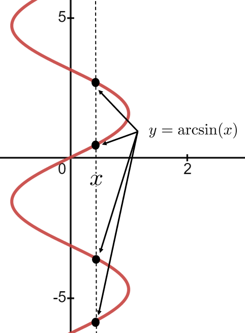
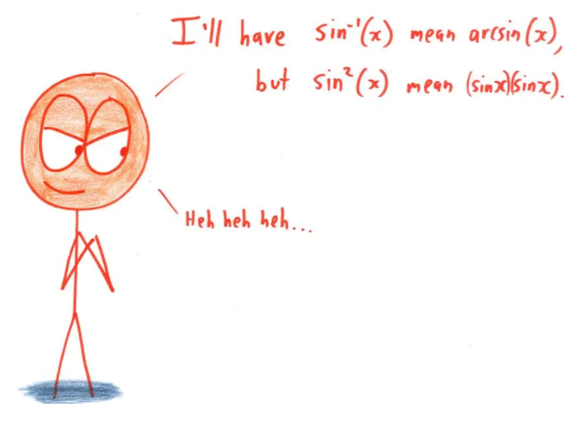
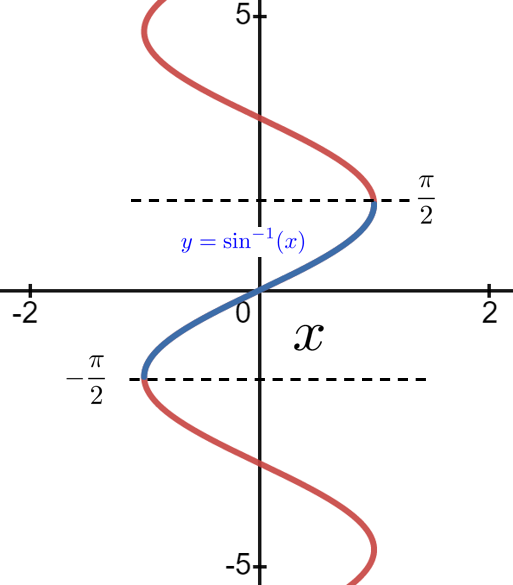
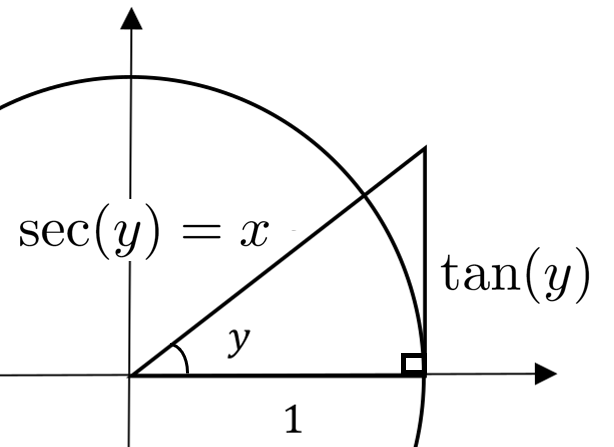

Section6.7The Other Inverse Trigonometric Functions
Despite how much time we spent talking about them, the single valued branches for \(y=\inverse\tan(x)\) and \(y=\inverse\cot(x)\text{,}\) were actually fairly apparent from the graphs of \(x=\tan(y)\) and \(x=\cot(y)\text{.}\) All we had to do was choose one continuous branch from either graph. We described the process carefully because for the other inverse trigonometric functions things are a little more problematic. For those we will have to use the derivatives of our “arc” multifunctions as a guide.
In general, we define an arcfunction as \(\text{arcfunction}(x)=y\) precisely when \(\text{function}(y)=x\text{.}\) So, \(\arcsin(x)=y\) when \(\sin(y)=x\) and \(\arccos(x)=y\) when \(\cos(y)=x\text{.}\)
Subsection6.7.1The Inverse Sine Function: \(\inverse\sin(x)\)
When we graph \(\arcsin(x)\) by flipping the graph of \(\sin(x)\) across the graph of the line \(y=x\) we get the sketch below. For the value of \(x\) shown in the sketch the arrows point to a few of the possible values of \(\arcsin(x)\text{.}\) There are infinitely many so obviously \(\arcsin(x)\) is also a multifunction, not a function.

To find the differentials of \(y=\arcsin(x)\) and \(y=\arccos(x)\) we proceed just as we did with the \(\arctan(x)\) and \(\arccot(x)\text{.}\) If \(y=\arcsin(x)\) then \(x=\sin(y)\) so:
Notice how this formula differs from the one you found in Drill 6.7.1.
(b)
Derive the same result from the identity: \(\arccos(x)= \frac{\pi}{2}-\arcsin(x)\text{.}\)
The plus/minus and minus/plus that appear in equations (6.15) and (6.16), respectively, are present because \(\arcsin(x)\) and \(\arccos(x)\) are both multifunctions like \(\arctan(x)\text{.}\)
Since \(\arcsin(x)\) is not a function at all it can’t be the inverse function of \(\sin(x)\text{.}\) Once again, to create an inverse sine function (which we will call \(\inverse\sin(x)\)) we will have to restrict the range of \(\inverse\sin(x)\) just like we restricted the range of \(\inverse\tan(x)\text{.}\) The question is, what restriction should we impose?

Figure6.7.3.The World’s Most Evil Mathematician, by Ben Orlin 16
https://mathwithbaddrawings.com/
When we were looking to restrict the range of the \(\inverse\tan(x)\) there was a natural choice that was clearly visible in the graph. Notice that the derivative of \(\arctan(x)\) (and thus the derivative of \(\inverse\tan(x)\)) is always positive while the derivative of the \(\arccot(x)\) (and thus the derivative of \(\inverse\cot(x)\)) is always negative. This happens naturally for the tangent and cotangent, but not for the arcsine, the arccosine or the other trigonometric functions.
But this does suggest how we might proceed. As you can see in the sketch below the slope of \(\arcsin(x)\) is sometimes positive and sometimes negative. Since we must restrict the range of \(\inverse\sin(x)\text{,}\) we may as well make a convenient choice. We’d like to constrain the range of the inverse sine in such a way that its derivative is always positive, and we’d like to constrain the range of the inverse cosine in such a way that its derivative is always negative.

From the sketch we see that if we restrict the range of \(\inverse\sin(x)\) to the interval \([-\pi/2, \pi/2]\) the graph of \(\inverse\sin(x)\) (in blue) will always have a positive slope, and therefore a positive derivative.
With this restriction in place we define the derivative of the inverse sine as follows.
Definition6.7.4.The Derivative of the Inverse Sine.
The derivative of the inverse sine function is defined to be,
Suppose that \(y=\arcsin(x)\text{.}\) Compute \(\dfdx{y}{x} \) and \(\dfdxn{y}{x}{2} \) and use these to show that \(y\) satisfies the differential equation
The function \(y=\arccos(x)\) also satisfies equation (6.17). Show this in two different ways.
Just as you did in part (a).
After first observing that \(\arccos(x)=\frac\pi2-\arcsin(x)\text{.}\)
Subsection6.7.2The Inverse Secant and Inverse Cosecant

To find the differential of \(\arcsec(x)\) we refer to the sketch above and we proceed exactly as before. If \(y=\arcsec(x)\text{,}\) then \(x=\sec(y)\) so
The function \(y=\arccsc(x)\) also satisfies equation (6.18). Show this in two different ways.
Just as you did part (a).
After first observing that \(\arccsc(x)=\frac\pi2-\arcsec(x)\text{.}\)
Again we will want to define the inverse secant, \(y=\inverse\sec(x)\) by restricting the range of the multifunction \(y=\arcsec(x)\) in such a way that the derivative of \(\inverse\sec(x)\) will always be positive. Similarly for the inverse cosecant function.
But forcing the derivative of the inverse secant to always be positive is a bit harder for a couple of reasons. The first is just that these functions are used less and thus we are not as familiar with them. The other is the nature of the derivative formula itself. Recall that
This time it is the presence of the \(x\) in the denominator along with the \(\pm1\) in the numerator that is troublesome. By choosing the range constraint judiciously we can control whether the plus or the minus is chosen in the numerator but any reasonable constraint on the range of \(\inverse\sec(x)\) will always include both positive and negative numbers in its domain. So the \(x\) in the denominator will make the derivative of \(\inverse\sec(x)\) positive for some values and negative for others. We don’t want that. We want it to be positive.
Usually when we want things in the world to be simple, Nature just laughs at us. But not this time. This time the problem is simply that we have too many choices. Both the \(\pm1\) in the numerator and the \(x\) in the denominator will influence the sign (positive or negative) of the expression \(\frac{\pm1}{x\sqrt{x^2-1}}\text{.}\) If they are both in play it is hard to control the sign. So to simplify things we just declare, by fiat, that the \(x\) in the denominator will be positive. Specifically, we’ll replace the \(x\) in the denominator with \(\abs{x}\text{.}\) Now we can control the sign of the derivative of the \(\inverse\sec(x)\) by simply constraining its range.
Problem6.7.11.
The sketch below shows that if we constrain the range of the \(\inverse\sec(x)\) to be the interval \((0,
\pi/2)\cup(\pi/2,\pi)\) then
Give constraints on the range of \(\inverse\csc (x)\) which guarantee that its derivative will always be negative.
Until now there has been a pattern to differentiation that we have not remarked on. But you may have noticed that when we differentiate a function we usually get back another function of the same type. That is,
The derivative of a polynomial is another polynomial,
The derivative of a quotient of polynomials is another quotient of polynomials,
The derivative of a trigonometric function is another trigonometric function.
The inverse trigonometric functions break this pattern. The derivative of an inverse trigonometric function is not another inverse trigonometric function. Nor is it a trigonometric function, a polynomial, or (except for the inverse tangent and cotangent) a quotient of polynomials.
Do you suppose there is any significance to this?
The inverse trigonometric functions will not have a significant role in our story for a while. However they will be very useful in some topics that will come up next semester. We’ve introduced them here simply because it makes sense to develop all of the differentiation rules at more or less the same time.
We now have differentiation formulas for all of the inverse trigonometric functions. These, along with the constraints on their ranges are given in the table below. Memorize them! You will need them.
Table6.7.12.Derivatives of Inverse Trigonometric Functions
Function
Domain
Range
Derivative
\(\inverse\tan(x)\)
All real numbers
\(-\frac{\pi}{2}\le y\le\frac{\pi}{2}\)
\(\displaystyle\frac{1}{1+x^2}\)
\(\inverse\cot(x)\)
All real numbers
\(-\frac{\pi}{2}\le y\le\frac{\pi}{2}\)
\(\displaystyle\frac{-1}{1+x^2}\)
\(\inverse\sin(x)\)
\(-1\le x\le 1\)
\(-\frac{\pi}{2}\le y\le\frac{\pi}{2}\)
\(\displaystyle\frac{1}{\sqrt{1-x^2}}\)
\(\inverse\cos(x)\)
\(-1\le x\le 1\)
\(0\le y\le\pi\)
\(\displaystyle\frac{-1}{\sqrt{1-x^2}}\)
\(\inverse\sec(x)\)
\(x\le-1\) and \(x\ge1 \)
\(0\le y\lt \frac{\pi}{2}\) and \(\frac{\pi}{2} \lt y \lt\pi\)
\(\displaystyle\frac{1}{\abs{x}\sqrt{x^2-1}}\)
\(\inverse\csc(x) \)
\(x\le-1\) and \(x\ge1 \)
\(-\frac{\pi}{2} \le y \lt0\) and \(0\lt y\le \frac{\pi}{2}\)
Now compute \(\dx\left(\inverse\sin\left(\frac{x}{\sqrt{x^2+a^2}}\right)\right),\) where \(a\gt0.\) Does this problem change if \(a\) is negative? How?
Problem6.7.17.
Show that each of the following statements is true.
Show that \(\dx\left(\inverse\cot\left(\frac{1-x}{1+x}\right)\right)=
\dx\left(\inverse\tan(x)\right)\text{,}\) if \(x\neq-1\text{.}\)
(b)
Part (a) says that the graphs of \(y=\inverse\cot\left(\frac{1-x}{1+x}\right)\) and \(y=\inverse\tan(x)\) have the same slope when \(x\neq-1\text{.}\) So their graphs should differ by a constant (Why?). Substitute \(x=0\) into both to see what this constant should be.
(c)
Now plot the graphs of both. Do they differ by a constant? Explain why or why not.